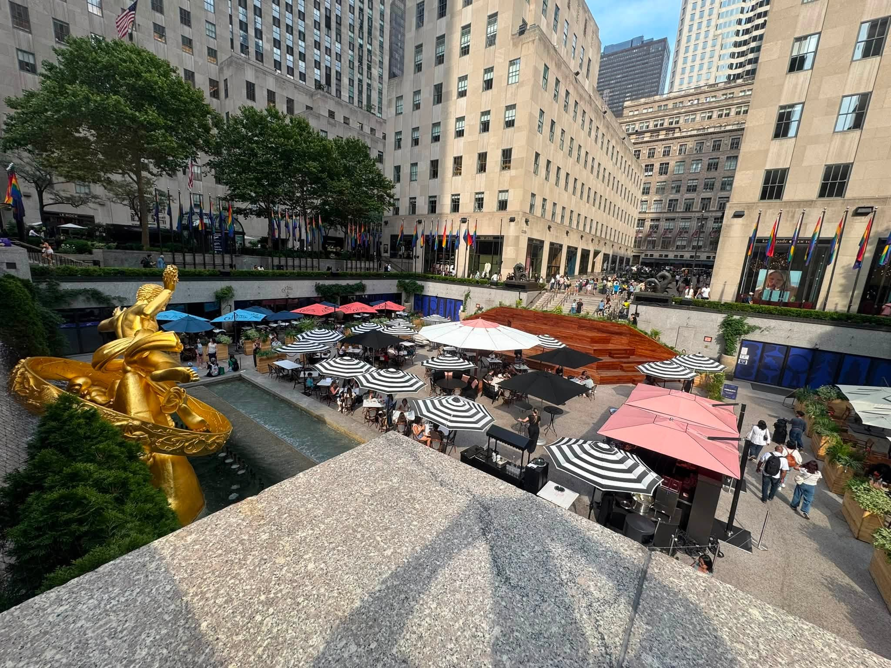

We explored the city's famous landmarks, including the Chelsea Market and Times Square. We also visited Rockafeller Center, which provided a rich cultural experience.
Times Square is a major commercial intersection, tourist destination, entertainment center, and neighborhood in Midtown Manhattan.

Chelsea Market is a popular food hall and shopping destination in Manhattan.

Rockefeller Center is a popular food hall and shopping destination in Manhattan.
Statue of Liberty is a colossal neoclassical sculpture on Liberty Island in New York Harbor

FAO Schwartz is a iconic toy store in New York City.